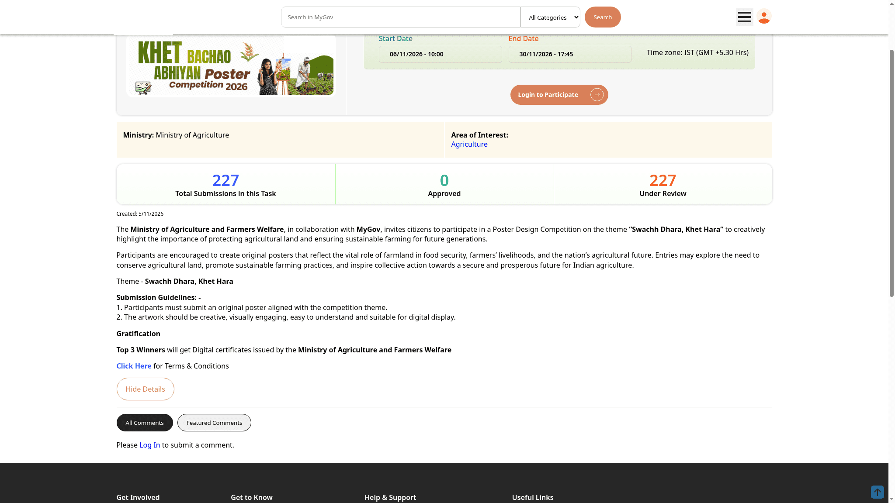

Khet Bachao poster competition: enter by 30 November
The Ministry of Agriculture and Farmers Welfare, with MyGov, invites Indian nationals to create an original poster on "Swachh Dhara, Khet Hara". The competition focuses on protecting farmland and sustainable farming. Submit one entry by Monday, 30 November 2026 at 5:45 PM IST. The top three winners receive digital certificates. No cash prize is stated in the checked official notice.
Who can enter
The contest is open to Indian nationals. It is not restricted to farmers or members of a particular scheme. Employees of the Ministry of Agriculture and Farmers Welfare and MyGov cannot enter. The checked public rules do not state an age limit.
What to create
Design an original poster on "Swachh Dhara, Khet Hara". It should show the importance of agricultural land for food security, farmers' livelihoods and the future of Indian agriculture. The notice suggests farmland conservation, sustainable farming practices and collective action as possible directions.
Keep the artwork creative, easy to understand and suitable for digital display. The terms require original work that does not violate copyright. Plagiarised entries are disqualified.
File and entry rules
- Submit a high-quality JPEG or PNG. Other formats are disqualified.
- Only one entry per person. Multiple entries from the same person are disqualified.
- Do not include provocative, objectionable or inappropriate content.
- The checked public sources do not specify pixel dimensions, DPI or a file-size ceiling. Check the live submission form before uploading.
How to participate
- Read the official MyGov task page and competition terms PDF.
- Prepare one original poster in JPEG or PNG format.
- Choose "Login to Participate" on MyGov and sign in or register.
- Follow the submission form. The terms require your name, email, phone number, postal address, district and state.
- Submit before 30 November 2026 at 5:45 PM IST. Late entries are not considered. Keep any acknowledgement, but note that proof of submission is not proof of receipt.

What winners receive
The top three winners receive digital certificates issued by the Ministry of Agriculture and Farmers Welfare. The checked notice does not announce a cash award or a certificate for every participant. Selection is decided by the ministry, whose decision is final.
Before you submit
- Entries cannot be withdrawn once submitted.
- The ministry will have rights to use the winning content. Participants are responsible for copyright or intellectual-property infringements.
- Incomplete, illegible, false or erroneous information may lead to disqualification.
- The organisers can amend or withdraw the competition or its terms. Recheck the official page before submitting.
- Disputes fall under courts in Delhi; parties bear their own expenses.
Video guide
We could not verify a reliable English or Malayalam video walkthrough specifically for this 2026 poster competition. Use the official MyGov task page and terms linked above, and follow the written steps in this guide. Do not rely on a video for a different contest or year.
What we verified
We checked the public MyGov task page and its official terms PDF, published 6 November 2026. The task page confirms the deadline and top-three digital certificates. The terms confirm Indian-national eligibility, excluded employees, file formats and one-entry limit. We did not sign in, inspect logged-in upload fields or submit an entry. We do not claim an age rule, upload-size limit or cash prize.
Sources: Ministry / MyGov task page and official terms PDF. Checked 11 November 2026. Editorial guide by AiCoN, not a government publication.